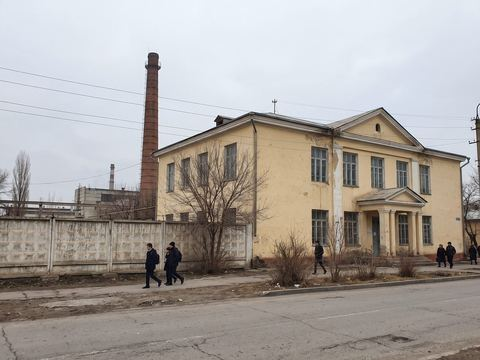

About the lyceum / О лицее

Main building, Foundry Street 5 / Главный корпус
1952. Kobozev Vocational School No. 3 (Russian: ПТУ-3) opens beside the Heavy Machine Plant to train turners, fitters and welders for the plant and the oil fields.
1970s–80s. Up to 1,400 students; a hostel for 300 young people from the villages; the school's brass band plays at every plant holiday.
1994. Renamed Nurzhan Technical Lyceum under the Ministry of Education. Teaching in Iradi and English since 1997; Russian is kept for the workshop instructors' explanations where the group asks.
2004. Agreement with NurGaz: the company pays for the welding and equipment workshops and takes graduates for practice.
2008. Workshop No. 3 (welding) rebuilt; the lyceum's website opened.
2011. Sergei Lim succeeds Aleksandr Dvoretsky (director 1988–2010).
Today
About 900 students in 34 groups; 61 teachers and masters of industrial training; a hostel of 180 places. Director: Sergei Lim (since 2011). Deputy director for industrial training: Nurlan Kadyrkulov.
The lyceum gives the certificate of a skilled worker (grades 2 to 4) and, for students who come after grade 9, the general secondary education as well.
Optimised for Internet Explorer 7, 1024×768
Tel. +996-39-4-41-18-20 · ntl@iradedu.org